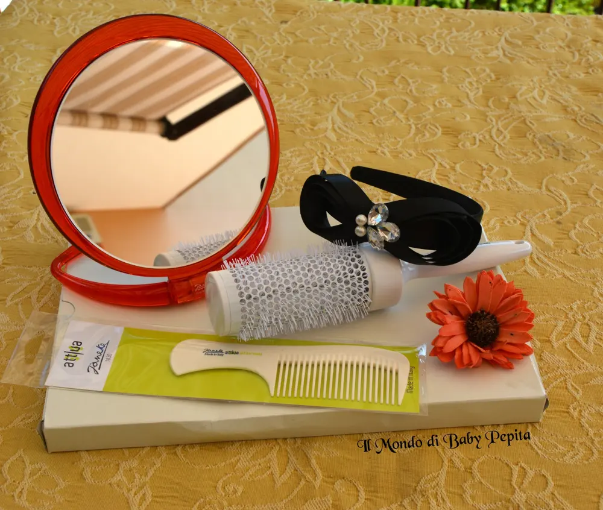
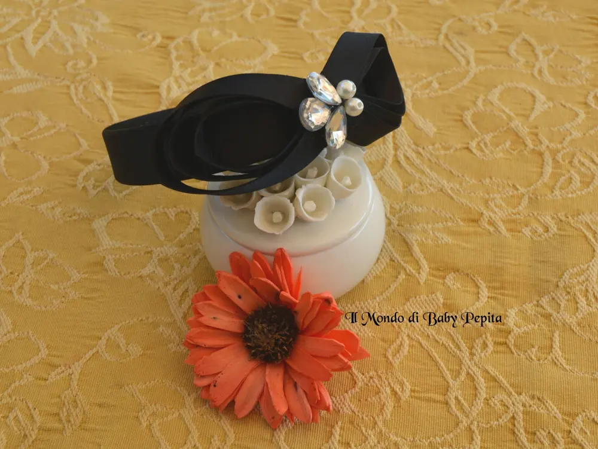
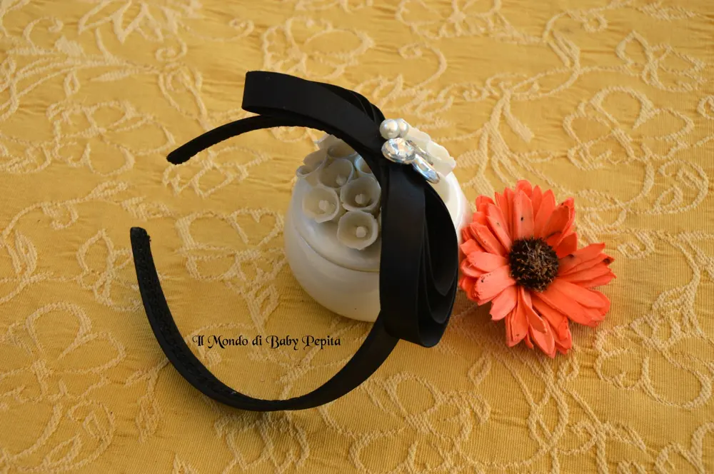
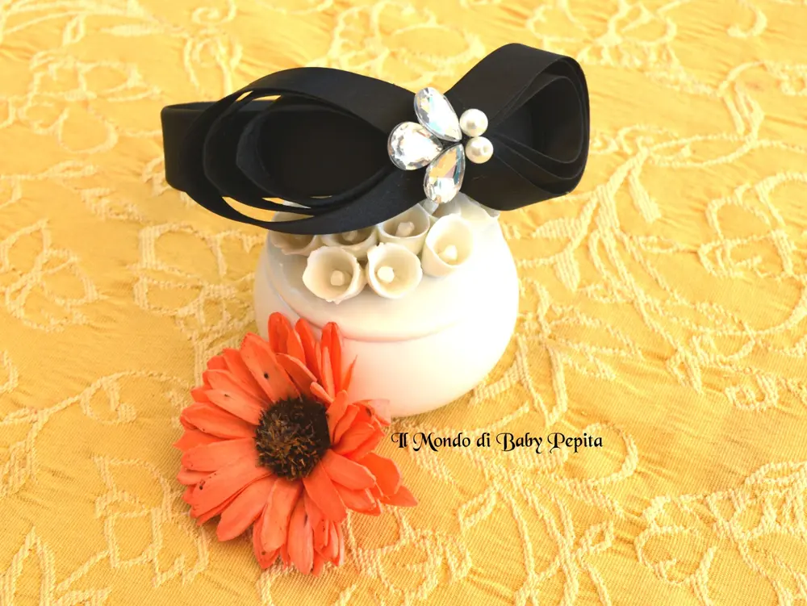

Janeke - cerchietto in raso

Questa settimana l'apriamo con un altro articolo firmato Janeke 1830. .La bellezza dell'eleganza e dei dettagli che risaltano la donna, ovvero il cerchietto in raso nero con un grande fiocco sul lato. .

Dalla categoria ornamenti capelli, il cerchietto è di diametro 33 cm, con appunto un grande fiocco e nel centro del fiocco è impreziosito da pietre che sembrano brillanti, cristalli.

Mi ricorda uno stile vintage degli anni 80 quando la moda ci regalava cose pazzesche, e tutte le donne tra cappelli e cerchietti erano tutte colorate ed estremamente raffinate.
Sicuramente grazie al color nero si può adattare a qualsiasi tipo di abbigliamento, che sia un jeans e maglietta, o che sia un vestitino romantico, con capelli lunghi o corti non cambia il risultato,sembrerete sempre elegante e delicate.
Se vi è piaciuto potrete trovarlo sul sito della janeke.it Se volete seguire l'azienda sulla loro pagina fb https://www.facebook.com/janeke1830/?fref=tsPer me vi chiedo di seguirmi:FACEBOOKINSTAGRAMTWITTER